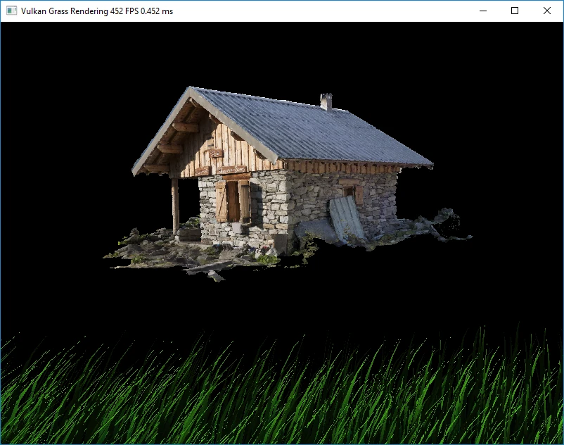
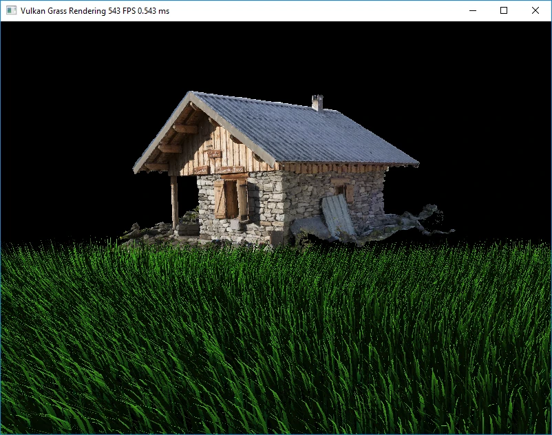
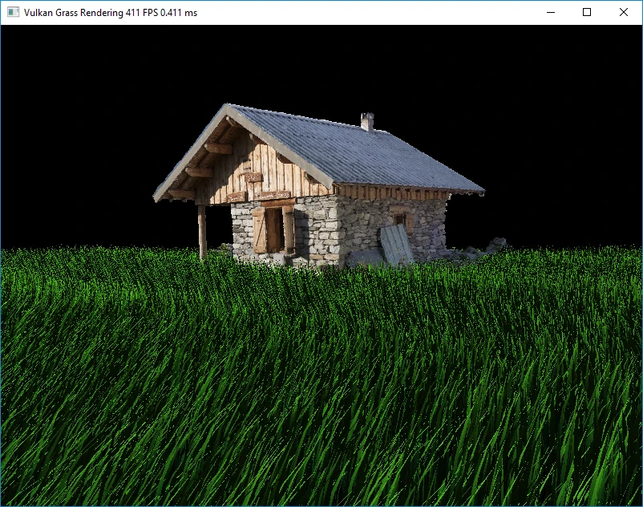
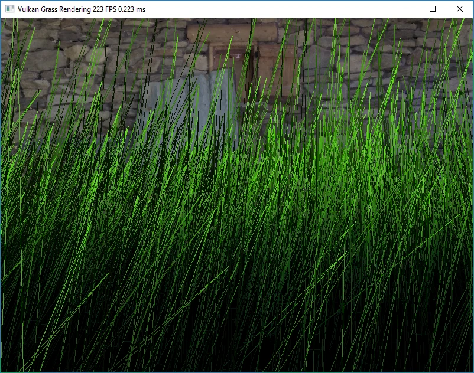
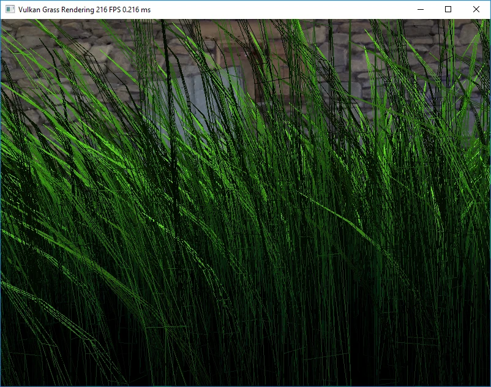
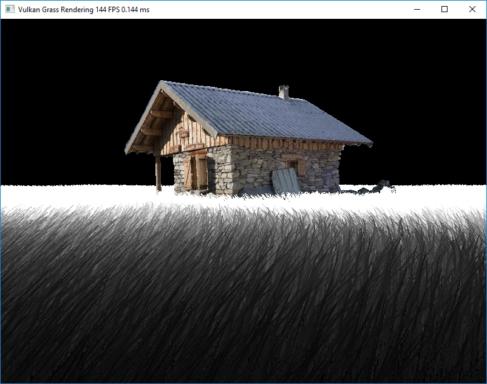

Grass Rendering with Tessellation
Overview
In this project, I implemented the contents of the paper, Responsive Real-Time Grass Rendering for General 3D Scenes with using Vulkan to implement a grass simulator and renderer. I used compute shaders to perform physics calculations on Bezier curves that represent individual grass blades in your application.
Since rendering every grass blade on every frame will is fairly inefficient, I also used compute shaders to cull grass blades that don’t contribute to a given frame. I wrote a vertex shader to transform Bezier control points, tessellation shaders to dynamically create the grass geometry from the Bezier curves, and a fragment shader to shade the grass blades.
Complete requirements
- Basic Features
- Compute shader
- Representing Grass as Bezier Curves
- Simulating Forces
- Culling tests (Orientation, View-frustum, Distance)
- Grass pipeline stages
- Vertex shade
- Tessellation control shader
- Tessellation evaluation shader
- Fragment shader
- Compute shader
- Additional Features
- Tessellate to varying levels of detail
Simulating Forces
In additional, with windDirectionalAlignment from paper, I also made stronger stiffness value for vertices close to the ground.
Because, the wind force is not the only force to restrict grass’ movement.
Culling tests
When we do View-frustum culling, if we just clip our grass with NDC values, and if we change the direction of view rapidly, empty area can be generated. Simply, instead of cliping with 1.0 and -1.0 value for X and Y coordinate, using larger values, in terms of absoulte value, can address this problem.
And, I tested 5 positions (v0, v2, mid point ((1/4)v0 * (1/2)v1 * (1/4)v2), mid point between v0 and mid, mid point between mid and v2) whether it should be clipped or not. Because, it seemed still not enough to decide it with just using 3 points.
| Threshold | 0.2 | 0.5 | 0.8 |
|---|---|---|---|
| Distance culling |  |
 |
 |
Tessellation for varying levels of detail
| LOD | Min | Max | Blend Value (more white gives lower LOD) |
|---|---|---|---|
| Tessellation |  |
 |
 |
Performance Analysis
Varying numbers of grass blades
Resolution : 800 x 600
| Number of blades | 2^15 | 2^16 | 2^17 | 2^18 | 2^19 | 2^20 | 2^21 |
|---|---|---|---|---|---|---|---|
| without culling | 1.40 | 2.40 | 4.40 | 8.60 | 17.0 | 33.0 | 67.0 |
| All culling | 0.37 | 0.47 | 0.70 | 1.02 | 1.73 | 3.28 | 6.33 |
Orientation culling vs View-frustum culling vs Distance culling
Resolution : 800 x 600
Orientation’s Threshold : 0.9
View-frustum’s clipping value : 1.3
Distance’s Threshold : 0.9
| Number of blades | 2^15 | 2^16 | 2^17 | 2^18 | 2^19 | 2^20 | 2^21 |
|---|---|---|---|---|---|---|---|
| Orientation | 1.38 | 2.25 | 4.20 | 8.00 | 15.9 | 30.3 | 62.5 |
| View-frustum | 0.46 | 0.60 | 0.93 | 1.56 | 3.00 | 5.71 | 11.1 |
| Distance | 1.13 | 1.94 | 3.61 | 6.99 | 13.5 | 27.0 | 55.5 |